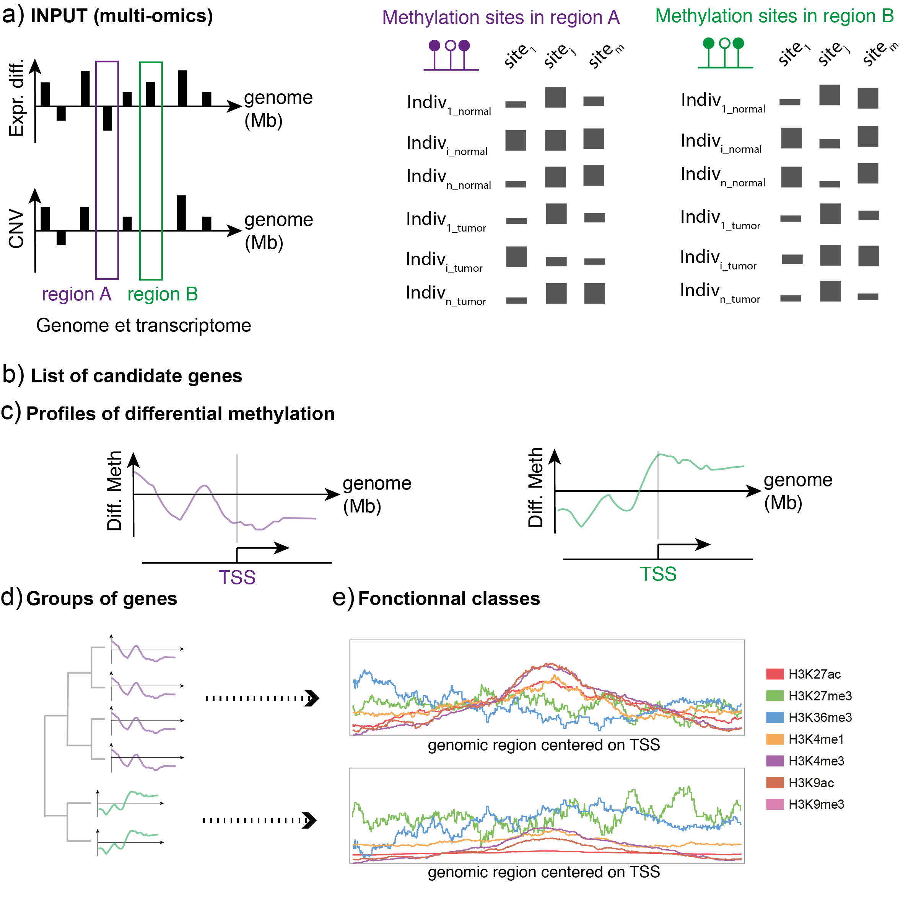

Research interests
Cancer heterogeneity
LuCaH: Intra-tumour Heterogeneity in the context of Lung Cancer (main collaborators: S. Achard, S. Khochbin)

A major challenge for current research in oncology is to integrate data and existing information into a model that takes into account intra- tumour heterogeneity. Such approach would offer a better understanding of the biological mechanisms involved in the evolution of cancer cells, which will improve the development of adapted therapeutic strategies.
In the LuCaH project, we address this challenge by establishing an original analytical framework for the study and analysis of complex biological data derived from tumours, and to provide a novel type of information about intra-tumour heterogeneity and cancer virulence.
Health data challenge (main collaborators: I. Guyon, S. Escarela)
Successful treatment of cancer is still a challenge and this is partly due to a wide heterogeneity of cancer composition across patient population.
This challenge will be dedicated to the quantification of intra-tumor heterogeneity using appropriate statistical methods on cancer omics data.
In particular, it will focus on estimating cell types and proportion in biological samples based on averaged DNA methylation and full patient history. The goal is to explore various statistical methods for source separation/deconvolution analysis (Non-negative Matrix Factorization, Surrogate Variable Analysis, Principal component Analysis, Latent Factor Models, …). Participants will be made aware of several pitfalls when analyzing omics data (large datasets, missing data, confounding factors…)
(Epi)genetic regulation and variability

PenDA: PenDA, a rank-based method for Personalized Differential Analysis: application to lung cancer (main collaborators: D. Jost, S. Khochbin)
With PenDA, we propose an original rank-based statistical method to perform personalized differential analysis in hundreds of samples. For each tested case, the method identifies the deregulated genes/probes as referred to the control group. We evaluated the method on both simulated and biological datasets. We applied the method to The Cancer Genome Atlas (TCGA) lung cancer RNA-seq dataset. Clustering by personalized differential analysis identified clinically meaningful clusters of patients with significant decrease in 10-year survival probabilities. We also provide an R package that ensures reproducibility of the methods and allows to easily analyze any dataset provided by the user.
EpiLung: Discovery and modeling of Epigenetically regulated genomic domains in Lung cancer (main collaborators: D. Jost, S. Khochbin)
Combining statistical analysis and quantitative mathematical modeling with molecular biology experiments on specific cell lines and on tumors, we aim at discovering epigenetically regulated genomic domains in lung cancer, as well as at characterizing and modeling these epigenetic “hot” domains and their association with tumor progression and aggressiveness.